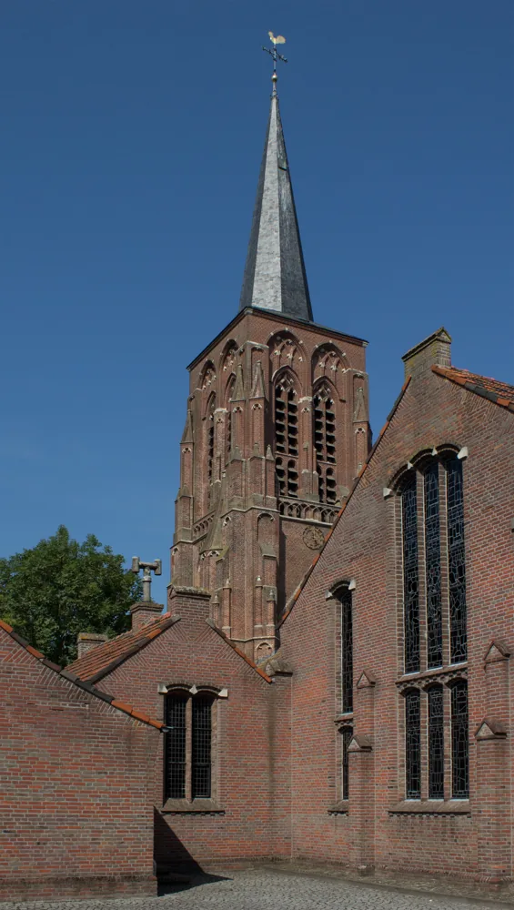
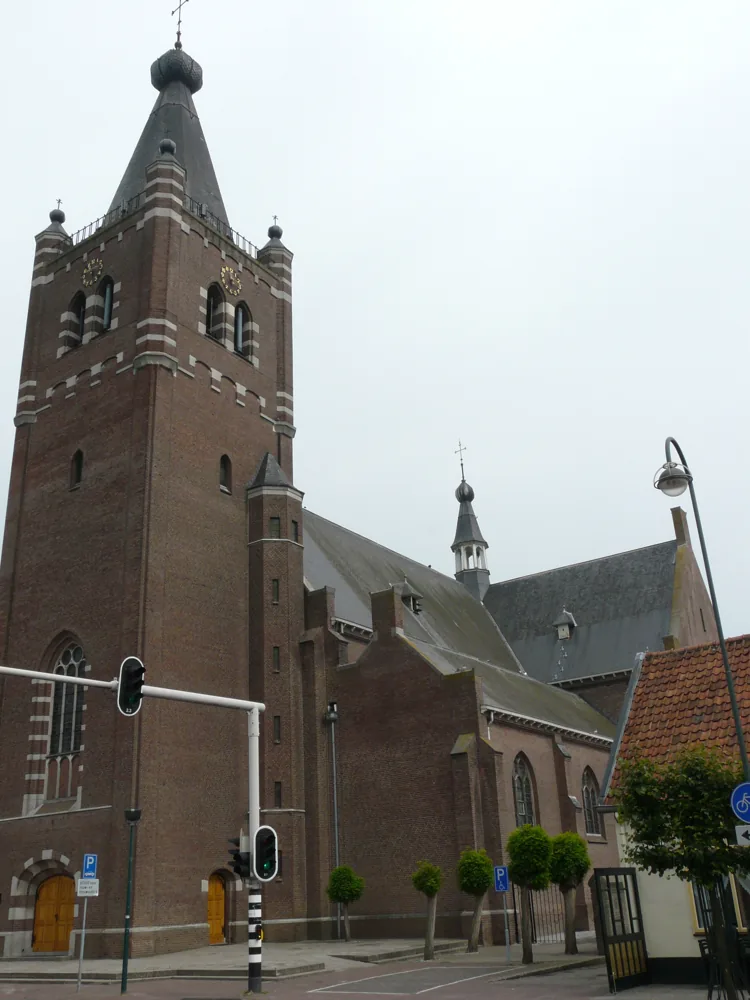

A
1978 · دورست
مولود في 22 مايو 1978 ونشأ في دورست. تلقى الإيمان في الأسرة وتأثر مبكرًا براهبات الفرنسيسكان في دونغن.
ملف شخصي ومؤسساتي يتتبع الانتقال من المحاسبة إلى الكهنوت، ثم يختبر كيف تتكرر في عمل يوخيم محاور الخدمة واللاجئين والشباب والإدارة والفرنسيسكان والذاكرة، من دون تحويل التشابهات إلى نبوءات أو علاقات سببية غير مثبتة.


مولود في 22 مايو 1978 ونشأ في دورست. تلقى الإيمان في الأسرة وتأثر مبكرًا براهبات الفرنسيسكان في دونغن.
تكوّن كمحاسب قانوني وعمل في المحاسبة. المصادر اللاحقة تذكر ناينروده وPricewaterhouseCoopers؛ لذلك خبرته الإدارية ليست طبقة لاحقة بل جزء من مساره السابق.
رُسم كاهنًا في بريدا في عيد القديس فيليبرورد، ثم خدم في منطقة ألفن–خيلزه قبل انتقاله إلى زيلاند.
دراسته وأدواره الإدارية اللاحقة تكشف اهتمامًا بكيفية انتقال الرعية من إدارة البنية القائمة إلى عمل رسولي نشط، مع استعمال الأدوات المالية والتنظيمية بدل فصلها عن الرسالة.
من نشاطات الشباب واللاجئين في 2016 إلى مشروع Suryana السوري، ثم زيارة مخيم ناكيفالي في أوغندا سنة 2024. الخط الثابت هو تحويل الضيافة والإيمان إلى فعل اجتماعي قابل للقياس.
نسّق مجموعات شبابية في ألفن–خيلزه، وكتب لاحقًا أن الشباب ليسوا مستقبل الكنيسة فقط بل حاضرها. هذا يجعل الشباب عنده فاعلين لا جمهورًا مؤجلًا.
علاقته بالفرنسيسكان بدأت في الطفولة ثم عُيّن administrator للجماعة سنة 2024. زيارته إلى إندونيسيا كشفت استمرار الفرع الذي تأسس من دونغن في ميدان بسومطرة سنة 1923.
زار مع هان أكرمانس مخيم ناكيفالي، حيث ربطا التعليم والتكوين والمشاريع المحلية بفكرة «الكنيسة المرسلة في الممارسة». التبرعات والمشاريع موثقة ضمن شبكة محلية في أوسترهاوت.
لا توجد بعد سلسلة موثقة تربط يوخيم بيان فان فيلتهوفن النحات في القرن 16. هذا السؤال يبقى منفصلًا عن قيمة مساره المعاصر.
يستحق بحثه الروماني حول «From maintenance into mission» استخراجًا مستقلًا لمعرفة كيف يربط الميزانية والقداسة والعمل الرسولي.